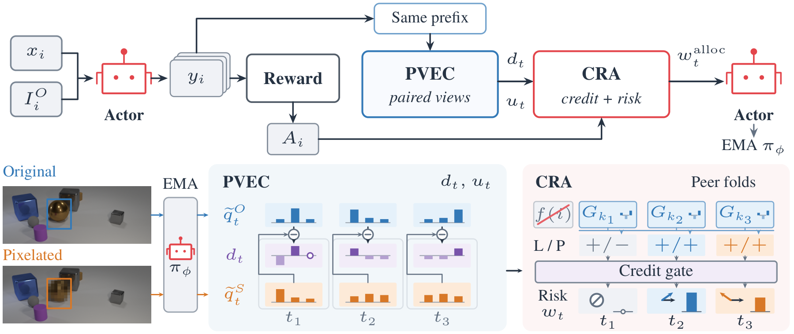
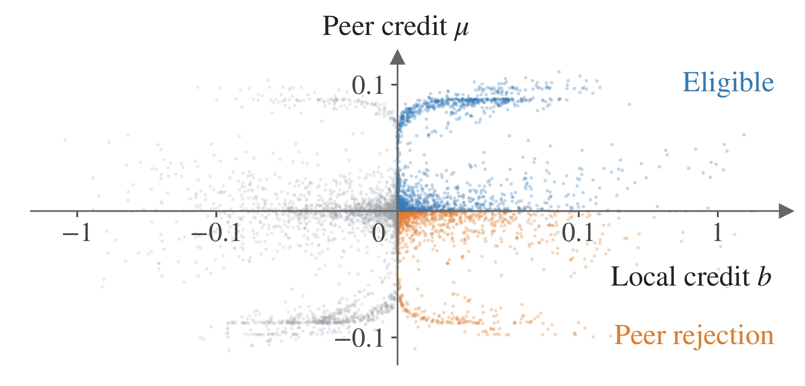
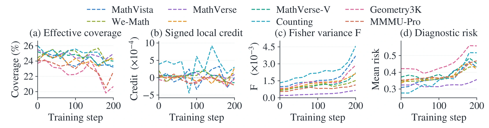

RAVEC Reward-Aligned Visual Evidence Correction

Abstract
Reinforcement learning with verifiable rewards improves multimodal reasoning, but response-level feedback provides limited guidance on which intermediate decisions to correct. Visual interventions reveal sensitivity to image content, yet this sensitivity alone does not establish reward alignment or support across questions. We introduce RAVEC (Reward-Aligned Visual Evidence Correction), which selects visual corrections using local and cross-question reward support and jointly determines their strengths within each response. Paired Visual Evidence Contrast (PVEC) compares predictions from an exponential moving average teacher at the same sampled response prefix under the original image and a version with its annotated evidence region suppressed, yielding signed correction directions. Credit–Risk Allocation (CRA) screens these directions using local reward alignment and reward support from other questions, excluding all responses to the source question. It then solves a response-level budgeted allocation problem, assigning additional cost to directions that locally reduce predictive entropy. The resulting signed visual loss augments Group Relative Policy Optimization (GRPO) during training; inference uses only the original image and question. Across ten multimodal benchmarks, RAVEC achieves the highest average accuracy among the compared methods with both 3B and 7B Qwen2.5-VL-Instruct models, outperforming GRPO by 2.67 and 1.39 percentage points, respectively. Component ablations support the combined design of evidence alignment, credit qualification, and risk-aware allocation. Code and models will be available soon.
Where did the wrong answer begin?

| Method | EC | TL | CS | PC | JA |
|---|---|---|---|---|---|
| GRPO (Shao et al., 2024) | ✗ | ✗ | ✗ | ✗ | ✗ |
| PAPO (Wang et al., 2026a) | ✓ | ✗ | ✗ | ✗ | ✗ |
| CFPO (Yu et al., 2026) | ✓ | ✗ | ✗ | ✗ | ✗ |
| CPPO (Rezaei et al., 2026) | ✓ | ✓ | ✗ | ✗ | ✗ |
| PRPO (Li et al., 2026c) | ✓ | ✓ | ✗ | ✗ | ✗ |
| TPAE (Zhang and Liao, 2026) | ✓ | ✓ | ✗ | ✗ | ✗ |
| SIVA-RL (Tang et al., 2026) | ✓ | ✗ | ✗ | ✗ | ✗ |
| VERPO (Li et al., 2026b) | ✓ | ✓ | ✓ | ✗ | ✗ |
| RAVEC (ours) | ✓ | ✓ | ✓ | ✓ | ✓ |
A model can misread one number in a table and still do the arithmetic perfectly. Group Relative Policy Optimization (GRPO) uses the final answer’s reward to assign the same advantage to the mistaken lookup and every correct step that follows.
RAVEC asks a teacher to predict the next token twice from the same partially written answer, first with the key image region visible, then with it pixelated. The shift reveals which token choices depend on that region. RAVEC acts on a proposed change only when reward signals from this response and other questions support it.
RAVEC outperforms GRPO on all ten benchmarks at both model sizes. The average gain is 2.67 percentage points at 3B and 1.39 at 7B.
How RAVEC chooses a correction

Find what the image changes
Paired Visual Evidence Contrast (PVEC) uses a moving average of the model as its teacher. A reference answer guides the region annotation during training. The teacher sees only the question, image view, and preceding tokens. If hiding the region lowers a token’s probability, PVEC proposes strengthening that token. If its probability rises, PVEC proposes suppressing it. Figure 2 shows the predictions for one table question.
Check the proposal against other questions
Blur alone can change a prediction. Credit–Risk Allocation (CRA) checks whether the proposed update points in a direction supported by reward on this response and on other questions. The second check excludes every response to the source question. A token receives weight only if it passes both checks.

Decide how much to change
The surviving corrections share one budget for the response. At equal reward support and update size, a direction that would narrow the model’s next-token distribution costs more and receives less weight. The weighted corrections form an extra training loss alongside GRPO.


Gains across ten multimodal benchmarks
We trained the 3B and 7B Qwen2.5-VL-Instruct models on 38,870 ViRL39K questions. At 3B, the largest gains over GRPO came on MARS-Bench (+4.70 points) and Geometry3K (+4.56). At 7B, MathVerse-V gained 3.32 points. The table gives equal weight to each benchmark and averages exact-match accuracy over eight sampled answers per question (Avg@8).

| Method | Geo3K | MVista | We-Math | MVerse | LVista | MMMU-Pro | MV-V | CVQA | MARS | POPE | Avg |
|---|---|---|---|---|---|---|---|---|---|---|---|
| Qwen2.5-VL-3B | 18.72 | 46.49 | 24.09 | 28.56 | 28.71 | 17.90 | 30.55 | 37.08 | 28.48 | 33.52 | 29.41 |
| GRPO (arXiv'24) (Shao et al., 2024) | 28.72 | 59.34 | 58.90 | 55.25 | 38.14 | 25.66 | 52.26 | 63.76 | 48.35 | 87.09 | 51.75 |
| DAPO (NeurIPS'25) (Yu et al., 2025) | 31.20 | 60.89 | 59.95 | 56.25 | 40.69 | 28.42 | 53.09 | 65.27 | 50.26 | 88.37 | 53.44 |
| PAPO (ICLR'26) (Wang et al., 2026a) | 30.95 | 61.38 | 60.09 | 57.14 | 38.67 | 27.11 | 53.95 | 63.78 | 49.72 | 86.49 | 52.93 |
| CFPO (ICML'26) (Yu et al., 2026) | 30.87 | 59.71 | 60.68 | 57.36 | 40.82 | 28.33 | 53.14 | 64.21 | 49.39 | 87.92 | 53.24 |
| RAVEC (ours) | 33.28 | 59.78 | 61.68 | 57.43 | 41.67 | 28.38 | 54.44 | 66.54 | 53.05 | 87.98 | 54.42 |
| Qwen2.5-VL-7B | 35.40 | 63.50 | 33.00 | 31.47 | 39.70 | 24.36 | 34.58 | 58.83 | 42.74 | 79.51 | 44.31 |
| GRPO (arXiv'24) (Shao et al., 2024) | 40.18 | 65.48 | 68.12 | 66.51 | 45.62 | 35.17 | 61.71 | 70.37 | 55.21 | 87.72 | 59.61 |
| DAPO (NeurIPS'25) (Yu et al., 2025) | 35.92 | 61.91 | 58.51 | 55.64 | 37.05 | 29.02 | 51.04 | 70.07 | 55.66 | 87.21 | 54.20 |
| PAPO (ICLR'26) (Wang et al., 2026a) | 40.25 | 69.53 | 66.79 | 68.43 | 46.07 | 36.63 | 64.97 | 69.76 | 54.59 | 87.70 | 60.47 |
| TPAE (ACM MM'26) (Zhang and Liao, 2026) | 46.73 | 64.20 | 69.07 | 45.50 | 47.20 | 38.27 | 64.37 | 72.29 | 58.10 | 87.37 | 59.31 |
| RAVEC (ours) | 43.20 | 66.44 | 70.73 | 67.53 | 46.28 | 36.09 | 65.03 | 70.69 | 55.99 | 87.99 | 61.00 |
Does the split of the budget matter?
In a separate 3B experiment on eight benchmarks, we kept the response budget fixed and gave every active token equal weight. Mean accuracy fell from 51.54% to 49.26%. Counting showed the largest drop, from 75.63% to 60.25%.

| Setting | Geo3K | MVista | We-Math | MVerse | LVista | Count | MMMU-Pro | MV-V | Avg |
|---|---|---|---|---|---|---|---|---|---|
| RAVEC (ours) | 33.28 | 59.78 | 61.68 | 57.43 | 41.67 | 75.63 | 28.38 | 54.44 | 51.54 |
| w/o EA | 32.05 | 58.54 | 60.37 | 56.49 | 41.83 | 73.85 | 28.73 | 53.78 | 50.71 |
| w/o CQ | 32.92 | 57.46 | 60.52 | 56.66 | 41.14 | 71.19 | 28.67 | 54.54 | 50.39 |
| w/o RA | 33.17 | 59.56 | 60.24 | 57.56 | 39.46 | 60.25 | 29.03 | 54.81 | 49.26 |
| Teacher source and EMA decay | |||||||||
| Fixed teacher | 22.29 | 51.17 | 48.93 | 49.46 | 33.90 | 46.69 | 23.25 | 41.44 | 39.64 |
| EMA 0.90 | 26.65 | 52.19 | 53.99 | 52.87 | 34.53 | 49.88 | 23.25 | 45.04 | 42.30 |
| EMA 0.95 | 24.66 | 53.26 | 50.44 | 49.66 | 36.72 | 49.06 | 22.52 | 42.51 | 41.10 |
| EMA 0.99 | 24.85 | 52.38 | 49.90 | 50.83 | 32.73 | 46.44 | 23.30 | 43.04 | 40.44 |
| Base cost coefficient | |||||||||
| 25.44 | 53.50 | 51.46 | 53.06 | 36.62 | 47.06 | 25.24 | 44.16 | 42.07 | |
| 24.66 | 53.26 | 50.44 | 49.66 | 36.72 | 49.06 | 22.52 | 42.51 | 41.10 | |
| 24.85 | 52.82 | 51.80 | 54.62 | 35.26 | 54.50 | 24.27 | 44.46 | 42.82 | |
| Avg@8 | Mean ± SD | |
|---|---|---|
| 0.25 | 40.87 | 38.33 ± 2.42 |
| 0.50 | 40.87 | 38.54 ± 2.82 |
| 0.75 | 44.09 | 40.27 ± 3.86 |
| 1.00 | 45.40 | 41.32 ± 4.16 |
| Avg@8 | Mean ± SD | |
|---|---|---|
| 64 | 41.74 | 38.93 ± 2.96 |
| 128 | 40.87 | 38.54 ± 2.82 |
| 256 | 41.73 | 39.03 ± 2.54 |
Does masking the evidence matter?
At the same response prefix, masking the annotated evidence moved the teacher’s prediction more than masking an equally large random region on 72.7% of prompts.

Does higher training reward predict better answers?
In a controlled 200-step run, GRPO and VGPO earned higher training rewards than RAVEC. RAVEC finished with the highest validation accuracy, 45.86%, on a fixed set of 160 questions. That was 3.28 points above CFPO, the strongest baseline at the final checkpoint.

Where do corrections land?
Across 100 matched pairs, correct responses received 2.40 times the mean token weight of incorrect responses to the same question. The share of tokens receiving a correction was similar in both groups.


What changes when one column disappears?
Switch views to see the teacher’s predictions at the same point in a response. Only the highlighted column changes.

Paired visual evidence
Which point must the regression line pass through?
| x | 1 | 2 | 3 | 4 | 5 |
|---|---|---|---|---|---|
| y | 1.2 | 1.8 | 2.5 | 3.2 | 3.8 |
- A (0, 0)
- B (2, 1.8)
- C (3, 2.5)
- D (4, 3.2)
Teacher prediction
Softened probability at the same prefix
BibTeX
@unpublished{yang2026ravec,
title = {{RAVEC}: Reward-Aligned Visual Evidence Correction},
author = {Yang, Junjie and Qian, Rui and Mao, Xutao and Wu, Yuhe and
Zhang, Mingda and Luo, Jiaxuan and Tan, Yang and Huang, Qiang and
Chen, Zhisheng and Li, Yanfeng and Tian, Dawen and
Wang, Changmiao and Tan, Tao},
year = {2026},
note = {Manuscript}
}